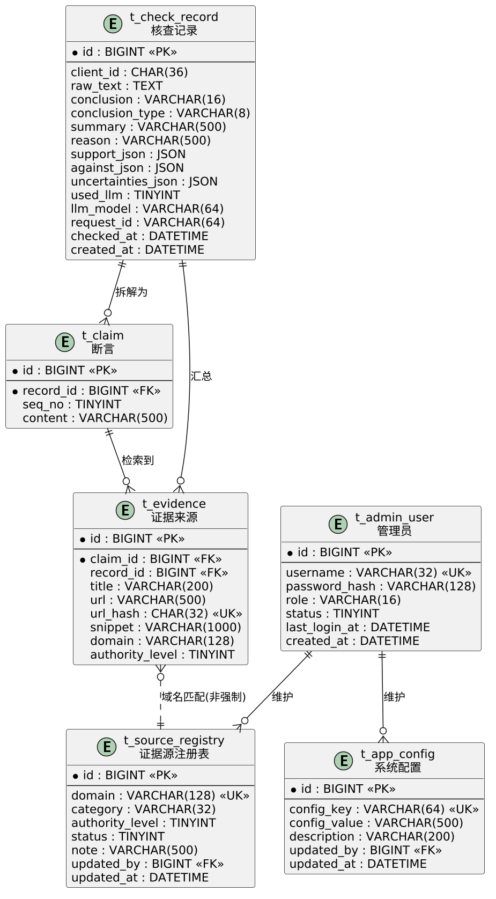

| 项目名称 | |
| 文档版本 | V1.0 |
| 编制日期 | 2026-11-22 |
| 团队名称 | FactLens |
| 所属课程 | 广东工业大学计算机学院 · 计科 24 级 56 班 · 软件工程 |
| 指导教师 | flowet |
| 团队成员 | 3224004156－刘心怡 |
| 团队成员 | 3224004158－杨添媛 |
| 团队成员 | 3224004157－吴纯瑶 |
| 团队成员 | 3224004155－李晨昀 |
| 团队成员 | 3124004111－依木拉木·阿不都苏力 |
| 团队成员 | 3124004121－艾力夏提·艾海买提 |
| 团队成员 | 3124004146－杨宗林 |
本文档是 FactLens 事实透镜的数据库设计说明书，依据 GB/T 8567—2006《计算机软件文档编制规范》中数据库设计说明书的编制要求编写，对应第二次团队作业（原型设计 + 概要设计）的数据库设计部分。
首版系统将历史记录保存在浏览器本地，尚无服务端数据库。迭代二引入服务端数据库，实现核查记录持久化（需求 R01）、管理后台（R02）与证据源注册表（R03）。本文档给出该数据库的概念结构（ER 图）、逻辑结构（关系模式）、物理结构与对象关系映射，作为迭代二建库与编码的依据。
| 项 | 内容 |
|---|---|
| 数据库名称 | factlens |
| 数据库系统 | 线上 MySQL 8.0（PythonAnywhere 托管提供）；本地开发 SQLite 3 |
| 访问方式 | Python 后端经 SQLAlchemy ORM 访问；管理后台经 /api/admin/* 接口间接访问 |
| 使用它的程序 | FactLens 后端核查服务（落库核查记录）、管理后台（运维与配置） |
| 首次建库时间 | 迭代二（计划 2026 年 11 月下旬） |
本文档使用的缩写与术语与《FactLens 系统设计说明书》1.3 节一致，此处补充数据库专用术语：
| 术语 | 定义 |
|---|---|
| ER 模型 | Entity-Relationship 实体联系模型，用实体、属性、联系描述概念结构 |
| 关系模式 | 用二维表描述的数据库逻辑结构，本文档以 t_ 前缀命名六张表 |
| ORM | 对象关系映射，实体类与库表之间的映射关系，见附录 A |
| 权威等级 | 证据源可信度分档：3=高、2=中、1=低、0=黑名单 |
| 软删除 | 通过 status 字段标记停用而非物理删除，保证历史数据可追溯 |
| 编号 | 资料 |
|---|---|
| [1] | 《FactLens 系统设计说明书》（本文档姊妹篇，第 5 章系统数据结构设计） |
| [2] | 团队仓库需求说明 docs/requirements.md（F01～F08） |
| [3] | GB/T 8567—2006 计算机软件文档编制规范 |
| [4] | 课程作业要求（第二次团队作业） |
| [5] | SQLAlchemy 2.0 文档、MySQL 8.0 参考手册 |
| 项 | 约定 |
|---|---|
| 数据库名 | factlens |
| 表名 | t_ 前缀 + 小写下划线（如 t_check_record），共 6 张 |
| 字段名 | 小写下划线（如 conclusion_type） |
| 主键 | 每表 BIGINT 自增 id（t_evidence 附加 url_hash 唯一键） |
| 外键 | 以 _id 结尾，指向主表主键 |
| 状态字段 | status / 软删除标记，1=正常启用，0=停用 |
| 程序 | 访问表 | 操作 |
|---|---|---|
| 后端核查服务（编排层/报告生成） | t_check_record、t_claim、t_evidence | INSERT（核查落库） |
| 降级判定引擎（RuleJudge） | t_source_registry | SELECT（权威域名加权） |
| 管理后台-概览 | t_check_record | SELECT（统计聚合） |
| 管理后台-记录管理 | t_check_record | SELECT / DELETE |
| 管理后台-证据源管理 | t_source_registry | CRUD |
| 管理后台-系统配置 | t_app_config | SELECT / UPDATE |
| 管理后台-登录 | t_admin_user | SELECT（口令校验）、UPDATE（登录时间） |
| 软件 | 用途 |
|---|---|
| MySQL 8.0（线上）/ SQLite 3（本地） | 数据库系统 |
| SQLAlchemy 2.0（Python） | ORM 与连接管理 |
| pymysql（线上）/ 内置 sqlite3（本地） | 数据库驱动 |
| MySQL Workbench / DBeaver | 设计与管理工具 |

实体与联系说明：
| 实体 | 含义 | 主要联系 |
|---|---|---|
| t_check_record 核查记录 | 一次核查的完整存档 | 拆解为 1～3 条断言；汇总多条证据 |
| t_claim 断言 | 从原文拆出的可独立查证陈述 | 属于 1 条记录；检索到 0～n 条证据 |
| t_evidence 证据来源 | 断言的一条检索来源 | 属于 1 条断言并冗余关联记录；与注册表按域名匹配（非强制） |
| t_source_registry 证据源注册表 | 域名可信度档案 | 由管理员维护；参与判定加权 |
| t_admin_user 管理员 | 后台账号 | 维护注册表与系统配置 |
| t_app_config 系统配置 | 键值配置 | 由管理员维护 |
设计要点：证据同时挂靠断言（claim_id）与记录（record_id），既支持"断言级证据展示"（R04），也便于按记录统计来源数；注册表与证据之间是按域名的非强制匹配——证据落库时记录当时的权威等级快照，注册表后续调整不影响历史报告。
| 字段 | 类型 | 空 | 默认 | 说明 |
|---|---|---|---|---|
| id | BIGINT | 否 | 自增 | 主键 PK |
| client_id | CHAR(36) | 是 | NULL | 匿名客户端标识（浏览器生成 UUID，迭代二用于跨设备同步） |
| raw_text | TEXT | 否 | 待核查原文（≤2000 字） | |
| conclusion | VARCHAR(16) | 否 | 四值结论中文名 | |
| conclusion_type | VARCHAR(8) | 否 | true/false/partial/unknown | |
| summary | VARCHAR(500) | 否 | 整体分析摘要 | |
| reason | VARCHAR(500) | 否 | 判定理由 | |
| support_json | JSON | 是 | NULL | 支持要点数组 |
| against_json | JSON | 是 | NULL | 反驳要点数组 |
| uncertainties_json | JSON | 是 | NULL | 不确定因素数组 |
| claim_count | TINYINT | 否 | 1 | 断言数（冗余，便于列表展示） |
| source_count | SMALLINT | 否 | 0 | 来源数（冗余，便于列表展示） |
| used_llm | TINYINT(1) | 否 | 0 | 是否模型判定 |
| llm_model | VARCHAR(64) | 是 | NULL | 本次判定所用模型名 |
| request_id | CHAR(32) | 是 | NULL | 请求编号，关联服务端日志（迭代二） |
| checked_at | DATETIME | 否 | 核查时间（北京时间） | |
| status | TINYINT | 否 | 1 | 1=正常，0=已删除（软删除） |
| created_at | DATETIME | 否 | 当前时间 | 落库时间 |
索引：PK(id)；IDX(checked_at)；IDX(conclusion_type)；IDX(client_id)。
| 字段 | 类型 | 空 | 默认 | 说明 |
|---|---|---|---|---|
| id | BIGINT | 否 | 自增 | 主键 PK |
| record_id | BIGINT | 否 | 外键 FK → t_check_record.id | |
| seq_no | TINYINT | 否 | 1 | 断言序号（1～3） |
| content | VARCHAR(500) | 否 | 断言内容 |
索引：PK(id)；IDX(record_id)；UK(record_id, seq_no)。
| 字段 | 类型 | 空 | 默认 | 说明 |
|---|---|---|---|---|
| id | BIGINT | 否 | 自增 | 主键 PK |
| claim_id | BIGINT | 否 | 外键 FK → t_claim.id | |
| record_id | BIGINT | 否 | 冗余外键 FK → t_check_record.id | |
| title | VARCHAR(200) | 否 | 来源标题 | |
| url | VARCHAR(500) | 否 | 来源链接 | |
| url_hash | CHAR(32) | 否 | URL 规范化后 MD5，唯一键 UK | |
| snippet | VARCHAR(1000) | 是 | NULL | 摘要 |
| domain | VARCHAR(128) | 否 | 域名（www. 已剥除） | |
| authority_level | TINYINT | 否 | 1 | 落库时权威等级快照（3/2/1/0） |
| created_at | DATETIME | 否 | 当前时间 | 落库时间 |
索引：PK(id)；UK(url_hash)；IDX(claim_id)；IDX(record_id)；IDX(domain)。
| 字段 | 类型 | 空 | 默认 | 说明 |
|---|---|---|---|---|
| id | BIGINT | 否 | 自增 | 主键 PK |
| domain | VARCHAR(128) | 否 | 域名，唯一键 UK | |
| category | VARCHAR(32) | 否 | 类别（官方政府/官方媒体/医疗机构/百科/专业媒体/社区/谣言站点等） | |
| authority_level | TINYINT | 否 | 1 | 权威等级：3=高、2=中、1=低、0=黑名单 |
| status | TINYINT | 否 | 1 | 1=启用，0=停用 |
| note | VARCHAR(500) | 是 | NULL | 备注（登记理由等） |
| updated_by | BIGINT | 是 | NULL | 外键 FK → t_admin_user.id，最后维护人 |
| updated_at | DATETIME | 否 | 当前时间 | 更新时间 |
索引：PK(id)；UK(domain)；IDX(authority_level, status)。
| 字段 | 类型 | 空 | 默认 | 说明 |
|---|---|---|---|---|
| id | BIGINT | 否 | 自增 | 主键 PK |
| username | VARCHAR(32) | 否 | 登录名，唯一键 UK | |
| password_hash | VARCHAR(128) | 否 | 口令哈希（bcrypt），不存明文 | |
| role | VARCHAR(16) | 否 | admin | 角色：admin=超级管理员，operator=运维员 |
| status | TINYINT | 否 | 1 | 1=启用，0=停用 |
| last_login_at | DATETIME | 是 | NULL | 最近登录时间 |
| created_at | DATETIME | 否 | 当前时间 | 创建时间 |
索引：PK(id)；UK(username)。
| 字段 | 类型 | 空 | 默认 | 说明 |
|---|---|---|---|---|
| id | BIGINT | 否 | 自增 | 主键 PK |
| config_key | VARCHAR(64) | 否 | 配置键，唯一键 UK（如 LLM_MODEL、SEARCH_RESULTS_PER_CLAIM） | |
| config_value | VARCHAR(500) | 否 | 配置值 | |
| description | VARCHAR(200) | 是 | NULL | 用途说明 |
| updated_by | BIGINT | 是 | NULL | 外键 FK → t_admin_user.id |
| updated_at | DATETIME | 否 | 当前时间 | 更新时间 |
索引：PK(id)；UK(config_key)。
约定：t_app_config 只存非敏感配置；LLM_API_KEY 仍只保存在服务端 .env，不入库、不入仓库。应用启动时"环境变量优先，库表配置覆盖默认值"。
关键字段取值字典：
| 字段 | 取值 | 含义 |
|---|---|---|
| conclusion_type | true / false / partial / unknown | 确认属实 / 确认不实 / 部分属实 / 暂无法核实 |
| authority_level | 3 / 2 / 1 / 0 | 高（判定加权）/ 中（参考）/ 低（弱参考）/ 黑名单（排除） |
| status | 1 / 0 | 启用 / 停用（软删除） |
| role | admin / operator | 超级管理员 / 运维员 |
| category | 官方政府 / 官方媒体 / 医疗机构 / 国际组织 / 百科 / 专业媒体 / 社区 / 谣言站点 | 证据源类别 |
完整字段字典见 3.2 各表结构。
实体类与库表的映射关系（Python / SQLAlchemy 2.0，迭代二数据层）：
| 实体类（Python） | 库表 | 说明 |
|---|---|---|
| CheckRecord | t_check_record | 对应报告对象 Report 的持久化形态 |
| Claim | t_claim | 一条断言 |
| Evidence | t_evidence | 对应首版 searcher.Source 的落库形态 |
| SourceRegistry | t_source_registry | 证据源注册表 |
| AdminUser | t_admin_user | 管理员账号 |
| AppConfig | t_app_config | 系统配置键值 |
映射示例（SQLAlchemy 声明式）：
from sqlalchemy import String, Text, BigInteger, ForeignKey, DateTime
from sqlalchemy.orm import DeclarativeBase, Mapped, mapped_column
class Base(DeclarativeBase):
pass
class CheckRecord(Base):
__tablename__ = "t_check_record"
id: Mapped[int] = mapped_column(BigInteger, primary_key=True, autoincrement=True)
raw_text: Mapped[str] = mapped_column(Text)
conclusion: Mapped[str] = mapped_column(String(16))
conclusion_type: Mapped[str] = mapped_column(String(8), index=True)
summary: Mapped[str] = mapped_column(String(500))
used_llm: Mapped[bool]
checked_at: Mapped[str] = mapped_column(DateTime, index=True)
class Claim(Base):
__tablename__ = "t_claim"
id: Mapped[int] = mapped_column(BigInteger, primary_key=True, autoincrement=True)
record_id: Mapped[int] = mapped_column(ForeignKey("t_check_record.id"), index=True)
seq_no: Mapped[int]
content: Mapped[str] = mapped_column(String(500))
class Evidence(Base):
__tablename__ = "t_evidence"
id: Mapped[int] = mapped_column(BigInteger, primary_key=True, autoincrement=True)
claim_id: Mapped[int] = mapped_column(ForeignKey("t_claim.id"), index=True)
record_id: Mapped[int] = mapped_column(ForeignKey("t_check_record.id"), index=True)
title: Mapped[str] = mapped_column(String(200))
url: Mapped[str] = mapped_column(String(500))
url_hash: Mapped[str] = mapped_column(String(32), unique=True)
domain: Mapped[str] = mapped_column(String(128), index=True)
authority_level: Mapped[int]
映射要点：类名驼峰 ↔ 表名下划线由 ORM 显式声明；首版的 Source（title/url/snippet/domain）在落库时增加 url_hash 与 authority_level 快照，字段一一对应，见附录 B 建表脚本。
CREATE DATABASE IF NOT EXISTS factlens
DEFAULT CHARACTER SET utf8mb4 COLLATE utf8mb4_unicode_ci;
USE factlens;
CREATE TABLE t_check_record (
id BIGINT AUTO_INCREMENT PRIMARY KEY,
client_id CHAR(36) NULL,
raw_text TEXT NOT NULL,
conclusion VARCHAR(16) NOT NULL,
conclusion_type VARCHAR(8) NOT NULL,
summary VARCHAR(500) NOT NULL,
reason VARCHAR(500) NOT NULL,
support_json JSON NULL,
against_json JSON NULL,
uncertainties_json JSON NULL,
claim_count TINYINT NOT NULL DEFAULT 1,
source_count SMALLINT NOT NULL DEFAULT 0,
used_llm TINYINT(1) NOT NULL DEFAULT 0,
llm_model VARCHAR(64) NULL,
request_id CHAR(32) NULL,
checked_at DATETIME NOT NULL,
status TINYINT NOT NULL DEFAULT 1,
created_at DATETIME NOT NULL DEFAULT CURRENT_TIMESTAMP,
INDEX idx_checked_at (checked_at),
INDEX idx_conclusion_type (conclusion_type),
INDEX idx_client_id (client_id)
) ENGINE=InnoDB;
CREATE TABLE t_claim (
id BIGINT AUTO_INCREMENT PRIMARY KEY,
record_id BIGINT NOT NULL,
seq_no TINYINT NOT NULL DEFAULT 1,
content VARCHAR(500) NOT NULL,
INDEX idx_record_id (record_id),
UNIQUE KEY uk_record_seq (record_id, seq_no)
) ENGINE=InnoDB;
CREATE TABLE t_evidence (
id BIGINT AUTO_INCREMENT PRIMARY KEY,
claim_id BIGINT NOT NULL,
record_id BIGINT NOT NULL,
title VARCHAR(200) NOT NULL,
url VARCHAR(500) NOT NULL,
url_hash CHAR(32) NOT NULL,
snippet VARCHAR(1000) NULL,
domain VARCHAR(128) NOT NULL,
authority_level TINYINT NOT NULL DEFAULT 1,
created_at DATETIME NOT NULL DEFAULT CURRENT_TIMESTAMP,
UNIQUE KEY uk_url_hash (url_hash),
INDEX idx_claim_id (claim_id),
INDEX idx_record_id (record_id),
INDEX idx_domain (domain)
) ENGINE=InnoDB;
CREATE TABLE t_source_registry (
id BIGINT AUTO_INCREMENT PRIMARY KEY,
domain VARCHAR(128) NOT NULL,
category VARCHAR(32) NOT NULL,
authority_level TINYINT NOT NULL DEFAULT 1,
status TINYINT NOT NULL DEFAULT 1,
note VARCHAR(500) NULL,
updated_by BIGINT NULL,
updated_at DATETIME NOT NULL DEFAULT CURRENT_TIMESTAMP ON UPDATE CURRENT_TIMESTAMP,
UNIQUE KEY uk_domain (domain),
INDEX idx_level_status (authority_level, status)
) ENGINE=InnoDB;
CREATE TABLE t_admin_user (
id BIGINT AUTO_INCREMENT PRIMARY KEY,
username VARCHAR(32) NOT NULL,
password_hash VARCHAR(128) NOT NULL,
role VARCHAR(16) NOT NULL DEFAULT 'admin',
status TINYINT NOT NULL DEFAULT 1,
last_login_at DATETIME NULL,
created_at DATETIME NOT NULL DEFAULT CURRENT_TIMESTAMP,
UNIQUE KEY uk_username (username)
) ENGINE=InnoDB;
CREATE TABLE t_app_config (
id BIGINT AUTO_INCREMENT PRIMARY KEY,
config_key VARCHAR(64) NOT NULL,
config_value VARCHAR(500) NOT NULL,
description VARCHAR(200) NULL,
updated_by BIGINT NULL,
updated_at DATETIME NOT NULL DEFAULT CURRENT_TIMESTAMP ON UPDATE CURRENT_TIMESTAMP,
UNIQUE KEY uk_config_key (config_key)
) ENGINE=InnoDB;